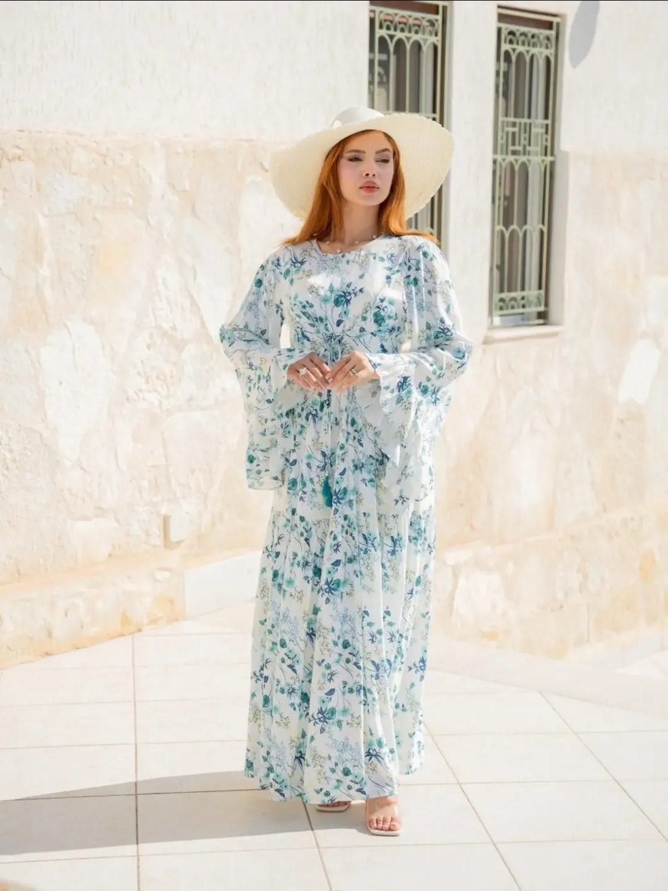

Fait main à Monastir
Demi-Manche
Robes fleuries, caracos & pantalons — la douceur d'un matin de printemps.
Découvrir
Robes fleuries, caracos & pantalons — la douceur d'un matin de printemps.
Découvrir
Longues, aériennes, romantiques — pensées pour la lumière tunisienne.
VoirFait main à Monastir· Satin, dentelle & broderie· Livraison partout en Tunisie· Écrin cadeau offert
MIRACLE
Née à Monastir, MIRACLE est la maison d'Imen Yahia. Chaque caraco, chaque parure de mariage, chaque robe demi-manche est pensée et cousue à la main — dans le satin, la dentelle et la broderie. Une féminité douce et romantique — et toujours pensée pour être offerte.
Notre histoireUne qualité rare. Le satin est sublime et la dentelle est faite avec un soin fou.
Nour — Sousse
J'ai offert une parure à ma sœur pour son mariage. L'écrin, le ruban… tout était parfait.
Yosra — Tunis
Livrée à Monastir en deux jours, et le caraco taille parfaitement. Je recommande les yeux fermés.
Rania — Monastir
Des pièces qu'on ne trouve nulle part ailleurs. Féminines, romantiques, jamais ordinaires.
Ines — Sfax

MIRACLE est née d'une idée simple d'Imen Yahia : que chaque femme puisse s'offrir une pièce d'exception, faite pour elle. Ici, rien n'est produit à la chaîne — les caracos, les parures de mariage et les ensembles demi-manche sont dessinés puis confectionnés à la main.
Satin fluide, dentelle délicate, broderies fines : des matières choisies pour la peau, des couleurs pensées comme un bouquet — crème, bordeaux, bois de rose, noir. Et toujours ce petit écrin rubané, pour que chaque commande soit déjà un cadeau.
Notre histoire01
Parcourez les collections et ajoutez vos pièces au panier.
02
Validez le panier sur WhatsApp, ou appelez le 92 970 596. On confirme taille, teinte et disponibilité.
03
Livraison à domicile partout en Tunisie, paiement à la livraison, écrin cadeau offert.

Mariage
Bien choisir sa parure de mariageNos conseils pour une nuit de noces inoubliable, du satin à la dentelle.

Style
L'art du demi-mancheComment porter le peignoir fleuri, du réveil au café en terrasse.

Entretien
Prendre soin du satinLe rituel d'entretien qui garde vos pièces belles saison après saison.